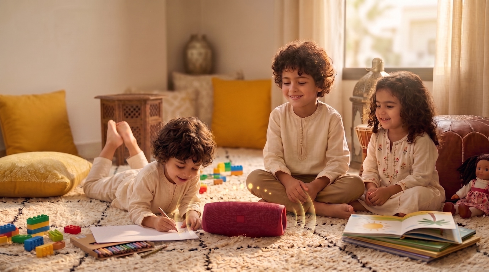

“Hier, nos aînés nous racontaient le Maroc ;
aujourd'hui, c'est à notre tour de donner de la voix.”
“Hier, nos aînés nous racontaient le Maroc ;
aujourd'hui, c'est à notre tour de donner de la voix.”
Pourquoi « Nooba » ? Dans notre patrimoine musical, la Nouba est une architecture sonore millénaire qui unit le Maghreb. Mais c'est aussi un concept magnifique de « tour de rôle » : hier, nos aînés nous racontaient le Maroc ; aujourd'hui, c'est à notre Nooba (notre tour) de donner de la voix pour la nouvelle génération.
Avant même de comprendre le sens des mots, un enfant ressent la musique d'une langue. C'est pourquoi nous avons d'abord investi le champ musical et sonore. La Darija, avec ses accents, ses rythmes et ses intonations, possède une mélodie unique que nous avons capturée dans nos comptines, berceuses et imagiers sonores.
Immersion naturelle dans le Maroc

« Le miel des histoires se partage à plusieurs. »
Pourquoi « Nooba » ? Dans notre patrimoine musical, la Nouba est une architecture sonore millénaire qui unit le Maghreb. Mais c'est aussi un concept magnifique de « tour de rôle » : hier, nos aînés nous racontaient le Maroc ; aujourd'hui, c'est à notre Nooba (notre tour) de donner de la voix pour la nouvelle génération.
Nooba n'est pas une visite au musée. C'est une proposition revisitée de notre culture. Nous nous sommes réappropriés les trésors d'hier pour les adapter à la réalité des enfants d'aujourd'hui et aux contraintes des familles modernes :
Chaque récit est un voyage où les enfants s'approprient leur héritage. Ils découvrent l'artisanat, vibrent avec l'humour unique de notre Darija et s'imprègnent de la sagesse de nos proverbes pour se construire une identité solide et fière.
Désormais, c'est notre Nooba et c'est leur histoire !